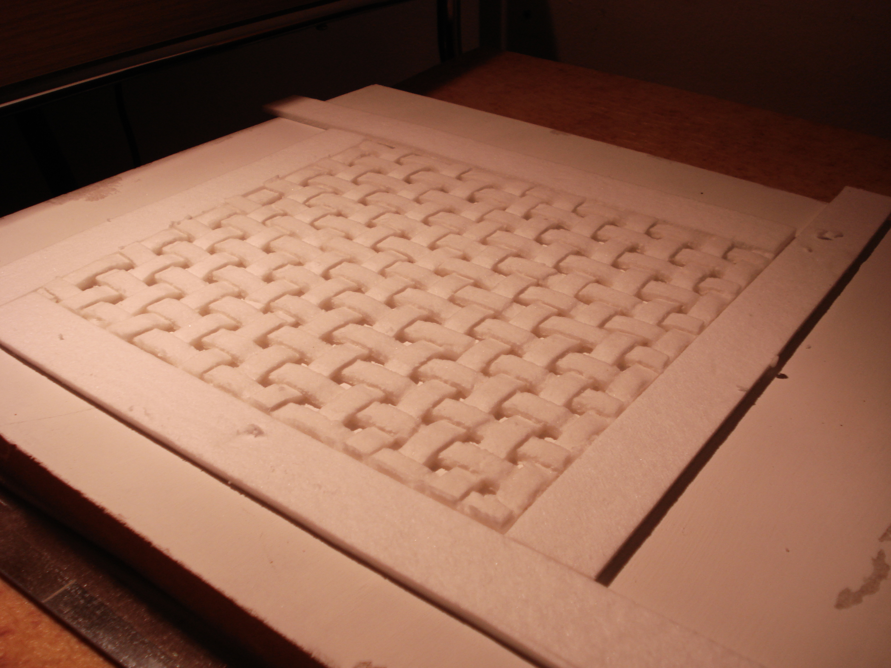
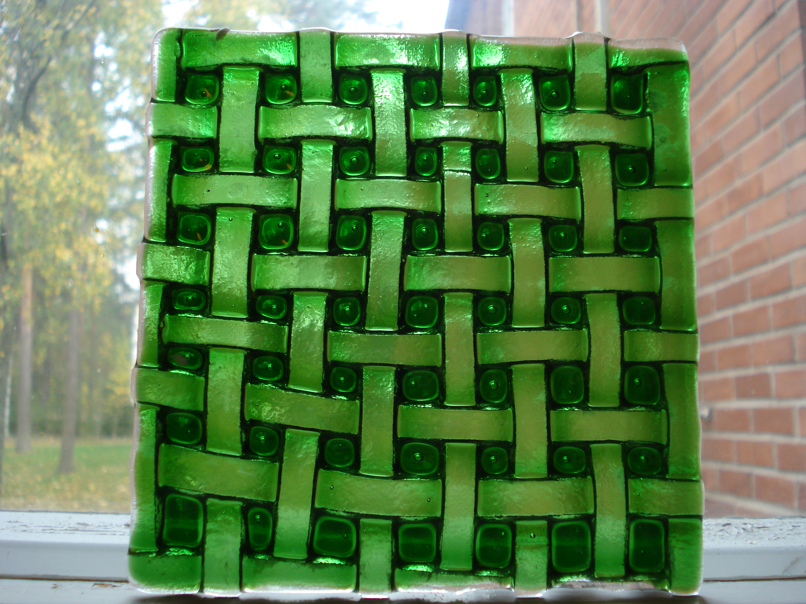
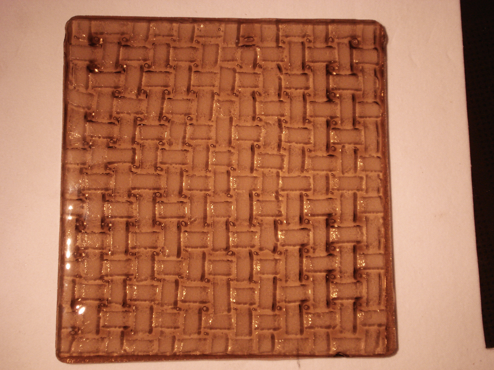

The method was to weave the mould of fiber paper.
 The fiber paper mould
put a sheet of clear
and a second sheet of color on the mould. In full fuse temperature the glass
first bends to follow the pattern. With time the glass over the
pattern runs downhill to the squares in between. The colored top layer
has less friction and moves faster. So the colour is concentrated
in the square pockets, leaving the pattern lighter.
 The Weave pattern
It was slumped in the second firing and kept the pattern.
With my skills I did not get good enough picture of the final piece.
Therefore the pictures are of the blacks.
 The second test
Here I tested only 2mm thick fiber paper. The less pronounced contrast is
partly due to that and partly of less intense color.